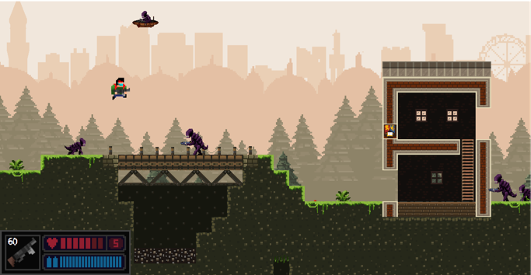

Campus Commandos
Campus Commandos is a side-scrolling 2D high-action shooter set at the University of Birmingham, where players stop an alien attack using various weapon types across three game modes. The game features a destructible environment with blocks that can be shot, blown up, and manipulated to create tactical positions. It follows an NES pixel art style and offers both solo and multiplayer options, including cooperative, competitive, and survival modes.
For more information, check out the GitHub repository
Languages
Campus Commandos is a side-scrolling 2D high-action shooter set at the University of Birmingham, where players stop an alien attack using various weapon types across three game modes. The game features a destructible environment with blocks that can be shot, blown up, and manipulated to create tactical positions. It follows an NES pixel art style and offers both solo and multiplayer options, including cooperative, competitive, and survival modes.
- Campaign Mode: Follow the main story through various Birmingham locations and fantastical places. Play solo or with up to 4 players online.
- Competitive Mode: Fight in an online arena against 2-4 players to gain points by defeating each other.
- Survival Mode: Single-player mode with procedurally generated levels. Health and ammo carry over, challenging players to survive as many levels as possible.
For more information, check out the GitHub repository
Languages
Java, Java-FX
Tags
Single-player or Online 2D shooter in a destructible world